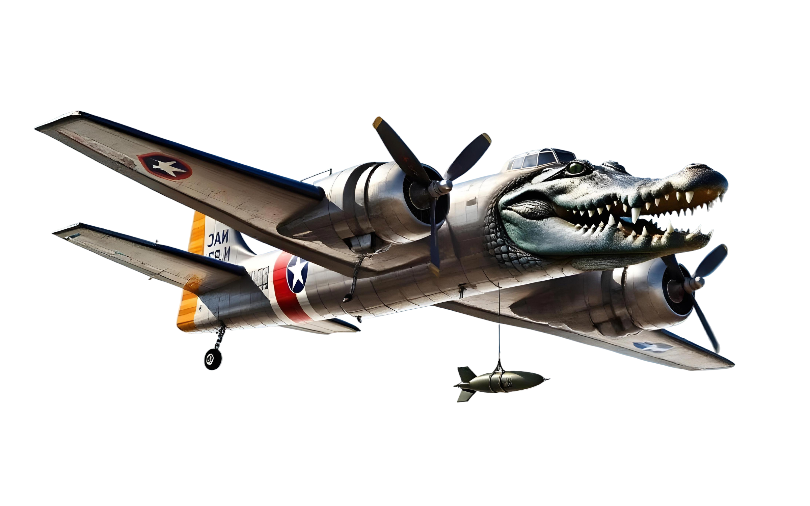
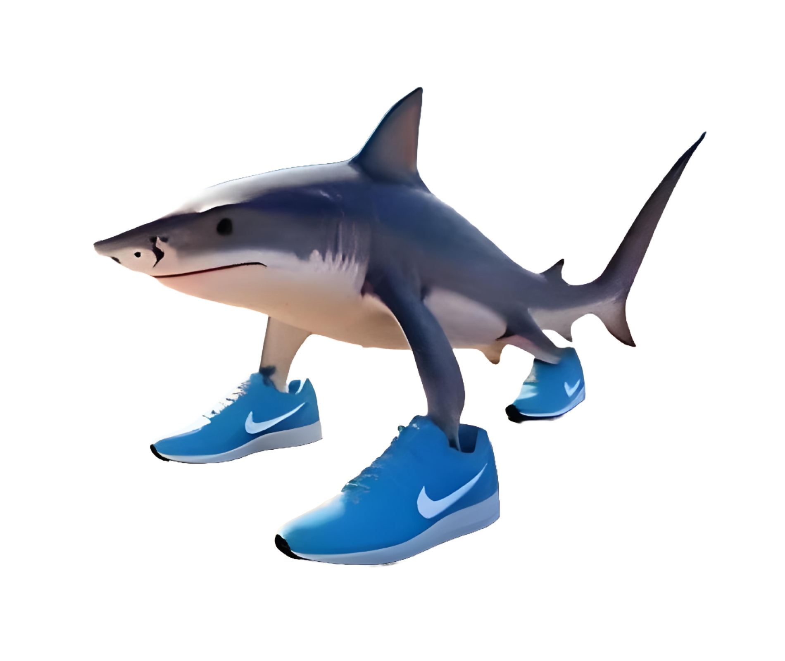

Bombardino Crocodilo
O herói. Um crocodilo-bombardeiro que dispara tiros duplos e, ao encher a barra de energia, solta uma explosão que limpa a tela.
Um shoot 'em up 2D de rolagem horizontal, desenhado como um cartum de 1930: tinta nanquim, película riscada e um pântano onde até as árvores têm cara.
▶ Jogar agoraPântano Surreal é um jogo de nave (shmup) em que você pilota o Bombardino Crocodilo, um crocodilo-bombardeiro, por uma única fase linear em um pântano noturno de estética surreal. Na primeira parte você atravessa o pântano enfrentando ondas de capangas (sapos trompetistas e peixes voadores) por cerca de 3 minutos. Na segunda parte chega ao confronto final contra o BOSS Tralalero Tralala, um tubarão de três pernas com tênis que muda de comportamento conforme perde vida.
A inspiração vem da estética e das batalhas de run and gun do jogo Cuphead, em especial da luta aérea contra Hilda Berg: o chefe ocupa boa parte da tela, ataca em fases e exige ler padrões de projéteis. A linguagem visual remete aos desenhos dos anos 30 (estúdios Fleischer): personagens "de borracha", olhos em formato de torta, contornos grossos, granulado e tremidinha de filme antigo.

O herói. Um crocodilo-bombardeiro que dispara tiros duplos e, ao encher a barra de energia, solta uma explosão que limpa a tela.

O chefe final. Um tubarão com três pernas e tênis, que dispara leques de projéteis, rajadas, espirais e investidas relâmpago.
Sapos trompetistas ziguezagueiam e soltam notas musicais. Peixes voadores mergulham em ondas e cospem bolhas na sua direção.
O personagem acelera e desacelera suavemente (interpolação exponencial), inclina ao subir/descer e tem uma hitbox pequena, característica do gênero.
Segurar o botão de tiro dispara dois projéteis por vez com leve dispersão. Cada acerto também recarrega a barra de energia.
A barra de 5 cartões enche ao acertar e derrotar inimigos. Cheia, o especial cria uma onda de choque que destrói projéteis inimigos, machuca capangas e causa dano alto ao chefe, com invencibilidade durante o efeito.
São 5 pontos de vida (HP). Ao ser atingido você fica invulnerável por um instante. Terminar com poucos danos rende nota maior.
O jogo é feito somente com HTML5, CSS3 e JavaScript puro (sem bibliotecas ou engines), desenhando tudo no elemento <canvas>.
O código está dividido em módulos por responsabilidade (configuração, entrada, áudio, sprites, cenário, entidades, diretor de ondas, efeitos e laço principal).
O detalhamento arquivo a arquivo está na página Desenvolvedores.
Quem fez o Pântano Surreal e como o projeto foi construído.
Atenção, grupo: os campos destacados em amarelo são PREENCHER e precisam ser substituídos pelos dados reais antes da entrega. Copie o bloco do integrante quantas vezes forem necessárias.
RA: 000000
E-mail: integrante1@email.com
Currículo breve: Estudante de graduação em ..., interesse em desenvolvimento de jogos e web. Experiências, estágios, projetos.
Neste projeto: ex.: programação do chefe e do laço principal
Links: GitHub / LinkedIn
RA: 000000
E-mail: integrante2@email.com
Currículo breve: ...
Neste projeto: ex.: cenário parallax e efeitos visuais
Links: GitHub / LinkedIn
RA: 000000
E-mail: integrante3@email.com
Currículo breve: ...
Neste projeto: ex.: páginas HTML/CSS e documentação
Links: GitHub / LinkedIn
Cada arquivo tem uma responsabilidade. Esta tabela serve de roteiro para explicar o código na defesa.
| Arquivo | O que faz | Conceito para explicar |
|---|---|---|
index.html | As 3 páginas, o menu e o <canvas> com as telas (menu, pausa, game over, vitória). | Seções com id, navegação por hash, overlays sobre o canvas. |
style.css | Todo o visual do site (tema anos 30), linkado no <head>. | Variáveis CSS, grid, aspect-ratio, responsividade. |
nav.js | Mostra só a seção ativa e marca o item do menu. | hashchange, classList.toggle, evento personalizado. |
config.js | Constantes: tamanho do canvas, vidas, duração da fase, vida do chefe, paleta. | Evitar "números mágicos" espalhados. |
utils.js | Funções de matemática (lerp, clamp, colisão círculo-círculo) e de desenho. | Interpolação linear, distância euclidiana. |
input.js | Lê o teclado: teclas seguradas × teclas apertadas neste frame. | keydown/keyup, Set, mapa de teclas. |
audio.js | Efeitos e música sintetizados com osciladores. | Web Audio API, envelope de volume, agendamento de notas. |
sprites.js | Carrega os PNGs e desenha o fallback em canvas se faltarem. | Image.onload/onerror, transformações do canvas. |
background.js | Cenário com 3 camadas de parallax. | Pré-renderização em canvas offscreen, tile que se repete, velocidades diferentes por camada. |
effects.js | Iluminação, sépia, vinheta, granulado e riscos de filme. | globalCompositeOperation (destination-out, multiply), gradientes radiais. |
entities.js | Tiros, partículas, jogador, sapos, peixes e o chefe. | Classes, herança (extends), máquina de estados do chefe. |
director.js | Agenda as ondas de inimigos e chama o chefe no fim do percurso. | Fila de eventos no tempo, dificuldade progressiva. |
game.js | Laço principal, estados, colisões, especial, HUD, banners e KNOCKOUT. | requestAnimationFrame, delta time, máquina de estados do jogo. |
main.js | Cria o Game quando a página carrega. | Ordem de carregamento dos scripts. |
Declaração: a estrutura inicial deste projeto (HTML, CSS e o código JavaScript do jogo) foi gerada com auxílio da IA Claude (Anthropic), a partir de um prompt descrevendo o jogo desejado e os requisitos da disciplina. Não foi usado o ChatGPT. O que a IA fez: escreveu o código-base dos módulos listados acima, o texto das páginas e a estrutura do site.
O que o grupo fez: PREENCHER com a verdade: o que foi testado, alterado, balanceado, corrigido ou escrito pelo grupo (ex.: ajuste de dificuldade, troca de sprites, mudanças no chefe, textos e currículos).
Compromisso com a explicação: todos os integrantes devem ser capazes de explicar o funcionamento do código. A tabela "Mapa do código" acima e os comentários em cada arquivo foram escritos para isso.
Tutoriais seguidos: PREENCHER. Se o grupo não seguiu nenhum tutorial completo, escreva "nenhum"; se seguiu, cite título, autor e link e diga quais partes aproveitou.
Documentação consultada (conceitos, sem cópia de código):
Inspiração (nenhum asset foi usado):
Sprites, sons e fontes:
Clique no jogo se as teclas não responderem. O jogo pausa sozinho ao trocar de aba.
Atravesse o pântano por cerca de 3 minutos derrotando sapos trompetistas e peixes voadores, depois enfrente e derrote o chefe Tralalero Tralala (barra de vida no topo da tela) sem perder seus 5 pontos de vida. Quanto menos danos sofrer, melhor a nota final.
Tudo que é vermelho com borda clara machuca: notas musicais, bolhas, estrelas do chefe e o corpo dos inimigos.
| Ação | Teclas |
|---|---|
| Mover | WASD ou ←↑↓→ |
| Atirar (segure) | Espaço ou Z ou J |
| Ataque especial | X ou K |
| Pausar | P ou Esc |
| Som ligado/desligado | M |
| Iniciar (no menu) | Enter |